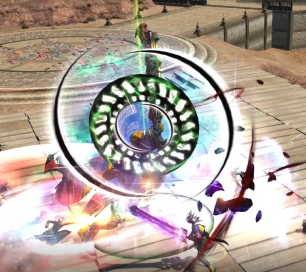
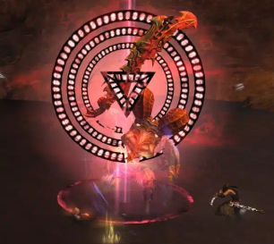
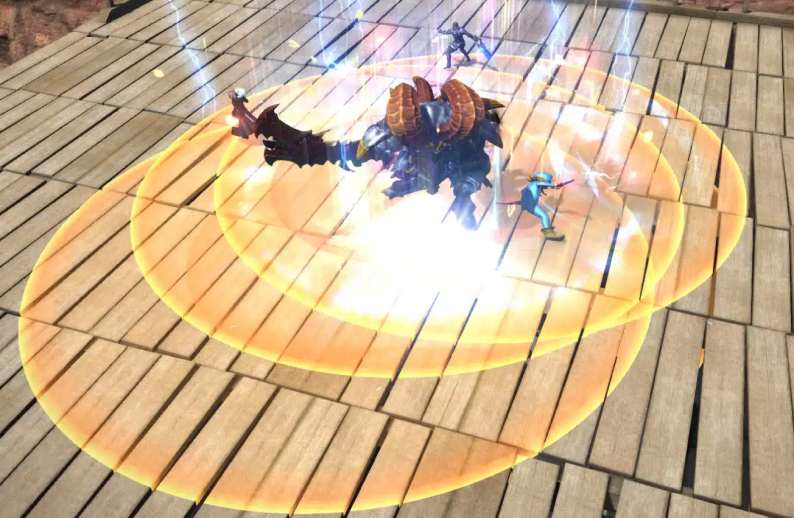

What Is Rival Wings?
Both teams will have a North and South tower to protect their core. Each tower has a defensive field that will mitigate damage taken and heal you if you stand within its aura. Keep this in mind when being pushed against players on the opposing team. All alliances on your team gain Ceruleum and Soaring stacks when you destroy a tower. Once a tower is destroyed the field disappears and the team's core becomes exposed allowing it to take damage from the opposing side.
Basic Objectives
The first team to destroy the core located on the opponent’s base will be declared the winner.
In the event neither team destroys a core, victory will be decided based on each team’s remaining core HP,
number of towers, and tower HP, in that order. In the event these values are the same for both teams, the match
will end in a draw.
Let’s cover the two main objectives to destroy in Hidden Gorge:
Towers
Both teams will have a North and South tower to protect their core. Each of your towers has a defensive field that will mitigate
damage taken and heal you if you stand within its aura. Keep this in mind when being pushed against players on the opposing team.
All alliances on your team gain Ceruleum and Soaring stacks when you destroy a tower. Once a tower is destroyed the defensive field
disappears and the team’s core becomes exposed allowing it to take damage from the opposing side.
The Core
Both teams will have a core located inside their base. The core cannot be damaged until at least one tower is destroyed. It is, however, ideal to destroy both of the opposing team’s towers first as any damage inflicted upon the core with a tower still up will be significantly mitigated.
Party Roles
There are four roles you should consider assigning in each party to maximize efficiency:
Pilot
Pilots are in charge of mounting the machina for your party.
Try to pay close attention to the machina UI and map to see what your teammates/enemies have already mounted onto the field.
Machina usage is elaborated on here.
Ceruleum (CE) Collector
CE is required to get your party’s machina onto the battlefield. Machina are essential to winning games so having at least one person in a party collecting CE is important.
Keep your eye on the CE gauge to ensure that it is always at least 50 CE.
You can gather CE in the following ways:
Gathering Ceruleum Tanks
Gather the glowing tanks that you see on the ground. You can find these under and around the train station at the middle of the map. Each one will add 10 CE to your party’s gauge. Once you have 50 CE your team can deploy a machina.
Mammets
Mammets are NPCs that will continuously spawn from both lanes from each side. They will only attack other mammets and will ignore players. While they can be healed, friendly mammets have a 50% incoming heal penalty from players. Each enemy mammet kill can give your party up to a maximum of 20 CE based on how much damage you inflict upon it. If your team’s mammets reach an objective, such as a tower or core, it will self-destruct in order to damaging the objective.
Laner
As a Laner your primary job is to push mammets and help escort your machina to the opposing teams objectives. Your job is also to defend against any advances from the opposing team.
Roamer
As a roamer you will assist the CE Collector or Laner depending on the flow of the match. Your job is also to help capture side objectives like the trains or goblin mercenaries throughout the entirety of the match.
Ceruleum Engines
Throughout the entirety of the match, trains will arrive at the middle of the map carrying supplies that your team can claim. There is a timer on your UI counting down to
the train’s arrival as well as a railroad crossing sound to signify the incoming train.
Be very cautious when crossing railroad tracks as getting run over will one shot you (even in a machina).
In order to claim the supplies, you will need to occupy the station by standing next to the train when it arrives. Keep in mind you do not need to stand on the train itself.
You only need to be standing within the highlighted zone to contest it. The train will release steam upon arrival so don’t jump on it right away or else you’ll be blown off.
There is a gauge that will fill up overtime and will fill more quickly if you have more team members present than the opposing team. Standing near the train itself will give
you a damage buff, so keep that in mind when fighting over the train.
One Soaring stack will be awarded to every alliance upon successfully capturing a train.
That being said, contesting the train isn’t always ideal. The supplies it has to offer at times aren’t worth the investment and you should use that time to capture other
objectives. You can check to see what the train will offer before it arrives by checking the train UI.
The train offers four types of supplies:
Main Ceruleum Tank
This will give each party 50 CE. This is an extremely helpful supply and should be put on high priority especially if it’s the first train at the start of the game. Even if your team is all full on CE you should still contest it to deny the other team from gaining it.
Gobtanks
This will deploy two gobtanks down both the North and South lane. This can be helpful when pushing and defending lanes. While they can be healed, friendly gobtanks have
a 50% incoming heal penalty from players.
This supply should be put on medium priority.
Gobbiejuice
This will give everyone on the team Adrenaline (Limit Break). This should be put on extremely low priority.
I’d honestly tell you to ignore it whenever it pops up since you could be using that time for more important objectives. If you do decide to contest it, do not devote more
than four players to do so.
Gobcrates
This supply will start appearing after ten minutes into the game. It will give you every supply effect in the game along with three Soaring stacks for every alliance if you
manage to claim it.
This should be put on the highest priority. These can greatly shift the momentum of the match and should be contested whenever the opportunity presents itself.
Supply Priority Summary
Gobcrates > Main Ceruleum Tank > Gobtanks > Gobbiejuice
Goblin Mercenaries
After a certain amount of time passes, goblin mercenaries will appear either North or South of the map. They will attack any player that approaches.
The team that manages to deal the most damage to him will form a contract where he will assist them in pushing the respective lane he was fought in. The mercenary in lane
is extremely potent and can cause some serious damage if left unattended by the opposing team. While he can be healed, friendly mercenaries have a 50% incoming heal penalty
from players.
This objective should be put on high priority.
There are four attacks he uses that some of you may recognize from the Alexander Creator boss Lamebrix Strikebocks:
Green Circle (In Mechanic)
Red Triangle (Out Mechanic)
Gobby Shootout
This is a rotating laser firing attack that he will do clockwise or counter clockwise depending on which way the arrows rotate. Get on the opposite side of where he’s going to start shooting and move accordingly to avoid it.
Gobby Bombs
The mercenary will fire rounds up into the air and placing AoEs under random players. Simply move out of the AoE circles to avoid this.
The Machina
Cruise Chaser
A next-generation machina ideal for combat against enemy players and machina.
Cruise Chaser specialises in killing players and destroying other machina.
Use this machina to escort your teams Oppressors/Brute Justices and defend against the enemy’s Oppressors/Brute Justices.
Stats:
- HP: 50,000
- Required CE to deploy: 50
- Deployment Requirement: None
- Maximum Simultaneous Units Deployed: 6
Actions:
- Spin Crusher
- Laser Sword X
- Optical Sight
Delivers an attack with a potency of 10,000 to all opposing warmachina in a cone before you. 1000 when attacking a player, mammet, or object.
This skill is solely for the the use against enemy machina. Use this against enemy Chasers, Oppressors and Brute Justices only. This skill is ineffective against players,
mammets and structures.
Delivers an attack with a potency of 12,500 to all opposing players and warmachina in a cone before you. 1,250 when attacking a mammet or object.
This skill is solely for the use against enemy players. This skill can be used against machina as well but Spin Crusher is usually a better option due to its faster recast time. This skill is
ineffective against mammets and structures.
Deals magic damage with a potency of 7,500 to all opposing players and warmachina near point of impact. 750 when attacking a mammet or object.
This skill is solely for the use against enemy players or machina. Use this skill to zone enemies and in conjunction with Laser Sword X for maximum efficiency. This skill is
ineffective against mammets and structures.
Oppressor
A hulking machina engineered for siege warfare, it excels at wreaking havoc upon structures.
These machina specialise solely in destroying structures. These machina can make or break games and only two can be deployed at a time. Use these machina to destroy towers and cores. Try to stay close to teammates as this machina has pratically no self-defense against the enemy.
Stats:
- HP: 100,000
- Required CE to deploy: 50
- Deployment Requirement: None
- Maximum Simultaneous Units Deployed: 2
Actions:
- Steam Release
- 3,000 Ton Missile
Deals magic damage to all opposing players and warmachina nearby with a potency of 2,500. 250 when attacking a mammet or object.
Additional Effect: 15-yalm knockback
This skill is solely for the purpose against enemy players. Mainly used as a tool to buy yourself time against players by pushing them away while you make your way towards
objectives or while you wait for your next missile to be ready. This skill is ineffective against mammets, machina and structures.
Deals magic damage with a potency of 250,000 to all objects near point of impact. 5,000 to opposing players, warmachina, or mammets. Potency decreases the greater the
target’s distance from point of impact, to a maximum of 30 yalms.
This skill is solely for the purpose of destroying structures. Do NOT use this skill on anything but towers and cores. Try to land direct shots on top of objectives for
maximum efficiency as each missile consumes 200 EP. This skill is ineffective against players, machina and mammets.
Brute Justice
Boasting unrivaled power, Brute Justice dominates opposing players on the battlefield,
while also laying waste to structures with its lethal armaments.
These machina specialise in all categories. Each team can only deploy one after a friendly tower has been destroyed. These machina are for the sole purpose of “Comebacks” and should only be used by pilots who are highly experienced.
Stats:
- HP: 75,000
- Required CE to deploy: 50
- Deployment Requirement: Losing a tower
- Maximum Simultaneous Units Deployed: 2
Actions:
- Double Rocket Punch
- Flamethrower
- Mega-Beam
Deals physical damage with a potency of 150,000 to all objects near point of impact. 7,500 when attacking opposing players, warmachina, or mammets.
Additional Effect: Stun
Duration: 3s
This is the Brute Justice’s ultimate skill as it can be used effectively against anything. Use it to stun players on foot to combo them into Flarethrower or Megabeam. The
skill can also be used to kill mammets giving you the power to push a lane solo and gain CE for yourself to refill if needed. This skill can also be used as a strong tool
against structures.
Deals fire damage with a potency of 10,000 to all opposing players and warmachina in a cone before you. 1,000 when attacking a mammet or object.
This skill is solely for the use against enemy players and machina. Use this in conjunction with Double Rocket Punch for maximum efficiency against players on foot. This
skill is ineffective against mammets and structures.
Delivers magic damage with a potency of 15,000 to all opposing players and warmachina in a straight line before you. 1,500 when attacking a mammet or object.
Additional Effect: 30-yalm knockback
This skill is solely for the use against enemy players and machina. Use this in conjunction with Double Rocket punch for maximum efficiency against players on foot. This
skill is ineffective against mammets and structures.
Universal Machina Actions:
- Ceruleum Refill
Uses 25 units of ceruleum fuel (CE) to restore 500 EP to currently mounted warmachina.
All machina have this skill and it is used solely for the purpose of refilling EP which is essentially MP for machina. You should only ever use this skill if your machina
is healthy or if you’re piloting a Brute Justice and need more EP.
Machina have no means of restoring hp so be mindful of this.
- Dismount
Exit the warmachina.
All machina have this skill. Dismounting and healing up with potions and spells will allow you to use
Return to get into another mech while avoiding feeding the enemy team
an extra Soaring stack.
Strategies & Tips
Here are some strategies and tips that you may be able to implement to help give you an edge against the opposing team:
The following map shows objectives and action ranges in addition to preferred spots for Oppressor to shoot missiles and be out of range of cannons, or certain locations that are suitable for knocking people away with Steam Release
Mammet Rushing
This strategy is simple but can be extremely effective if left unattended by the other team. Decide with your team which lane you want to rush mammets with and destroy the
objective as quickly as possible.
Ideally, you want to push the lane where the mercenary will spawn in order to have a better chance of capturing him later.
Oppressor Rushing
This strategy involves everyone in the party to be a CE collector at the start of the game. Doing so allows the designated pilot player to mech up as an Oppressor as soon
as possible.
Ideally, you want to push out an Oppressor in less than two minutes into the game in an attempt to catch the opposing team off guard.
Tower Holding
This strategy involves damaging a tower to extremely low hp and leaving it alone to destroy later. You’ll do this with both towers and ideally destroy both at the same time. This is to deny the opposing team access to piloting Brute Justice’s right away and allow your team to have momentum control.
Gorge Sniping
This strategy involves landing missiles as an Oppressor from the center of the map. The angle and placement of the cursor varies depending on geography but this can be useful if the opposing team isn’t manning their cannons.
Blind Siding Cannons
You can avoid the cannons range by hugging the wall away from them in the safe areas as shown in our map above, or even with going beneath the cannon platform and dropping a missile. This can be extremely useful when trying to land missiles as an Oppressor on the enemy’s core.
Cannon Sniping
This strategy involves rushing into the enemy’s base and killing the players mounted on the cannons to stop them from firing at your team.
Geyser Hopping
The geysers that erupt near South lane can be used to hop into the lane to save you time from traveling all the way around.
Map It Out
Try to keep your map open at all times. Objectives and machina are all marked so it provides vital information.
Rewards
Rival Wings provides many different rewards for your time.
Here’s what you can earn:
- Exp: Varies per level. Half exp is given for a loss.
- Max Level Allagan Tomestones: 50 non-weekly-capped tomes. 20 weekly-capped tomes. Must be max level. Same for win/loss.
- PVP Exp: 1000 if win. 500 if loss.
- Wolf Marks: 1000 if win. 500 if loss.
- Allagan Tomestone of Poetics: 50. Must be at least level 50. Same for win/loss.
Mounts
- Magitek Avenger Identification Key - 100 Rival Wings wins
- Magitek Avenger A-1 Identification Key - 100 Hidden Gorge wins
Titles
- Wings Of Steel - 1000 Rival Wings matches played
- Wings Of Fire - 1000 Rival Wings wins